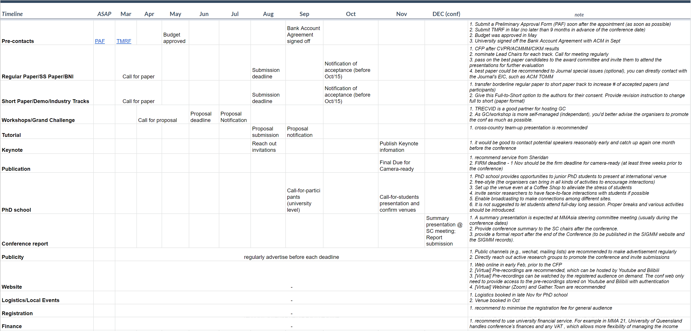

Guidelines for Organizing ACM Multimedia Asia Conference
www.acmmmasia.org
Guideline for hosting the MM Asia conference:
Guideline for organizing the MM Asia conference
Before a SIGMM-sponsored conference is approved by ACM HQ, the first thing for the conference organizers to do is to submit the Preliminary Approval Form (PAF). This is normally done by the Lead General Co-Chair or Treasurer, and requires an active ACM membership number.
The organizer will receive a confirmation email upon successful submission. The PAF will be forwarded to the SIGMM Conference Director or volunteer leadership for their review and endorsement. It can take up to two weeks for the PAF to be endorsed. Updates can be requested by contacting “paf_tmrf@acm.org”. Once the PAF has been endorsed, the conference organizers will receive a link to complete the Technical Meeting Request Form (TMRF) and submit their budget.
The TMRF form allows the responsible SIG Leadership to evaluate both the technical merit and financial aspects of the event. It is a guide for the organizers to use throughout the planning process. It includes general information, the conference budget and planning assumptions. Once the TMRF is approved, the committee is able to publish registration fees, distribute the advance program, execute non-hotel contracts, and make payments and deposits. The TMRF can be submitted online via the link provided to the organizers or by emailing it to “paf_tmrf@acm.org”.
April Mosqus (mosqus@hq.acm.org) is the contact person for program coordination of SIGMM (https://www.acm.org/special-interest-groups/contact-sigs). The organizers can consult April regarding general conference activities, e.g., sponsorship.
After the event, the organizers work with ACM HQ to finalize the conference financials. The financial summary sheet includes detailed breakdown of each item of expenditure and income. At the end of this guideline, you will find a typical example of the sheet.
Conference Fee Reduction. At the Annual SIGMM Business meeting in Nice, France, 2019, SIGMM announced to implement ways to reduce the conference registration fees for sponsored conferences, including MM Asia. Specifically, SIGMM will subsidize the registration fees for SIGMM members who register using the early-bird rate to the tune of US$100 each attendee. For example, if you have 70 SIGMM member early birds, and reduce the fees that they pay, then SIGMM will contribute $7,000 to your budget. The attendees can point at http://www.sigmm.org/ and follow the link to register SIGMM Membership.
For example, the following shows how IMX conference implemented this new policy:
|
EARLY REGISTRATION FEES
For the “normal” or the late/last-minute registration fee where there is no SIGMM reduction so you might have something like:
* Note that the above registration amounts are just used to illustrate. |
If the organizers also add a note to the registration page that ACM membership can cost as little as $99 or $19 for a student and that SIGMM membership costs $20 or $15 for a student, and they include links to https://www.acm.org/membership/membership-options for ACM membership and to http://sigmm.org/ for SIGMM membership, then if the attendee is a student, he or she can join both ACM and SIGMM for €34 and see his or her registration fee drop from €220 to €100. Likewise, as a professional, the prospective attendees would be incentivized to join ACM for $99 and SIGMM for $20 to see their registration drop from €700 to €500.
Student Travel Grant. SIGMM is forming a SIGMM-wide student travel awards system where SIGMM members who are students and who are first-authors of oral presented papers, will receive a contribution to their travel costs from SIGMM, depending on where they are coming from, and where the conference is. Here’s the link to SIGMM student travel application form : https://acmsigmm.wufoo.com/forms/sigmm-student-travel-application-form/. As soon as conference organizers have the dates for the opening and closing of student applications, they can consult SIGMM Chair or MM Asia Steering Committee Chair to get the link to the form (published in the website).
Diversity and Inclusion. SIGMM now has a chair of diversity and inclusion, Susanne Boll. The conference organizers should consider adding a committee member for your conference who looks after diversity and inclusion and if you do so, then that person can apply to call for further SIGMM funds to support diversity and inclusion, at MM Asia. That could be lunch for female or first-time attendees, support for childcare, or sign language interpretation, etc. The committee member can work with Susanne to make happen. Please see this link for more details of "25 by 25" policy.
Conference Organizing during Global Pandemic. ACM HQ has published a handbook on virtual conferences: https://www.acm.org/virtual-conferences. There is also a useful post on the BLOG@CACM which just published a post entitled The ASPLOS 2020 Online Conference Experience (https://cacm.acm.org/blogs/blog-cacm/243882-the-asplos-2020-online-conference-experience/fulltext), about running that conference virtually. In addition, below is ACM’s official policy on publications which basically says that ACM will be very flexible but strongly encourages conferences to continue to publish proceedings in the ACM DL. If the organizers want to stick to their original submission/publication schedule, then they can or if they want to shift it backwards in time, they can do that also but do make contact with ACM HQ to agree new dates. Check this for more details: ACM Publications Guidance on Conference Publication During COVID-19 Crisis (Issued March 27, 2020).

Financial Report template